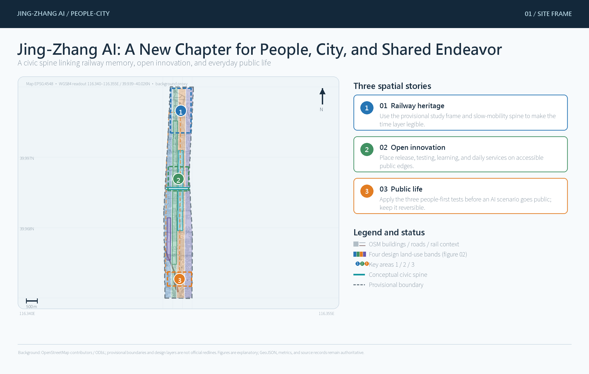
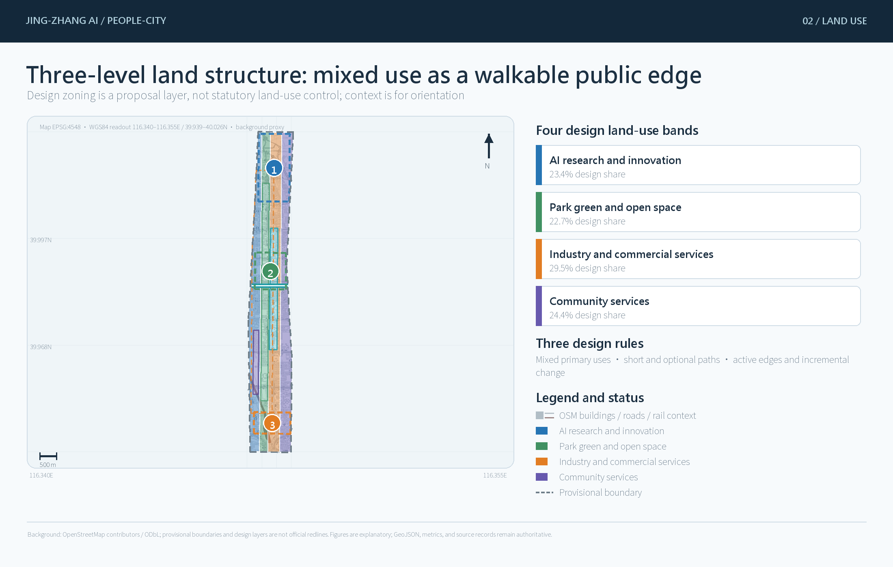
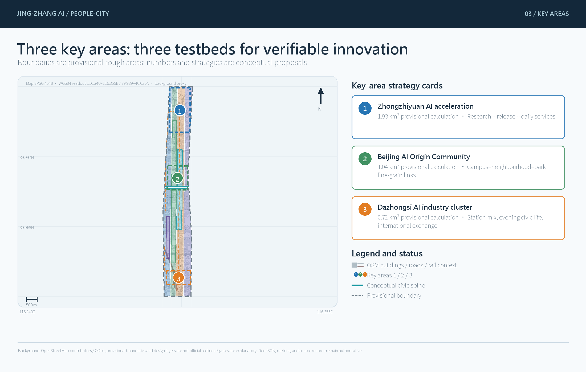
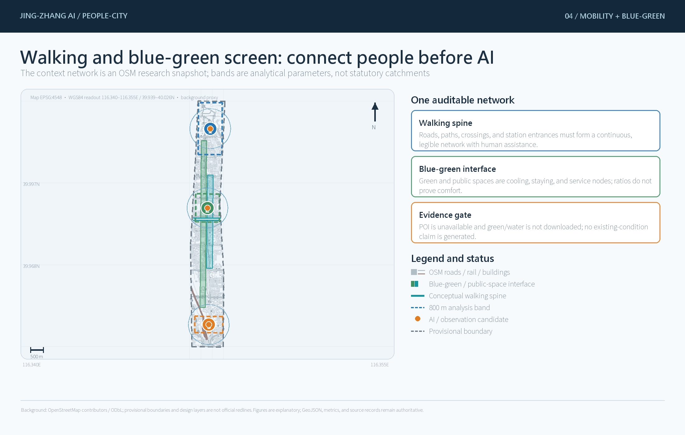
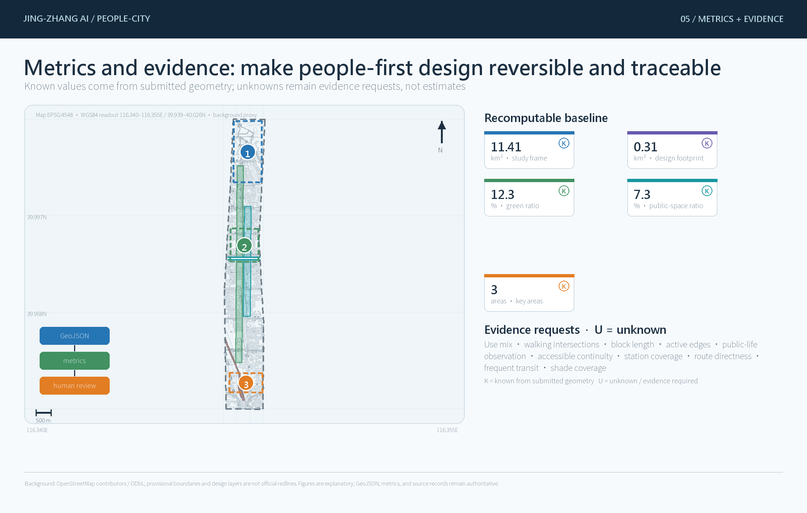

Overview Map
site-overview.png
Civic spine, three key areas, and provisional boundary
Translating people, city, and shared endeavor into auditable spatial structure, public-life tests, and reversible AI scenarios.

Civic spine, three key areas, and provisional boundary

Land-use structure, public-life interface, and scope framework

Differentiated roles and deepenable moves for the three key areas

Slow mobility, rail access, blue-green network, and AI scenario nodes

Recomputable metrics, unknown indicators, and evidence limits
Defines the AI ecosystem, future-city hypothesis, talent chain, and international exchange as the evidence and question-setting layer.
Translates the industry hypothesis into renewal projects, land-use structure, mobility, municipal systems, and the heritage public-life spine.
Deepens spatial moves, scenarios, and implementation conditions for Zhongzhiyuan, the Beijing AI Origin Community, and Dazhongsi.
Mixed uses, different time periods, and active ground floors must pass first; no single-enterprise public-space trial without a use/time baseline.
Observe walking, staying, sitting, talking, and service use before choosing AI components; proxies are not field observations.
Stations, walking, cycling, and public transport precede a smart-mobility interface; no continuous spine claim without a verified network.
land_use_mix_entropy · median_walkable_block_length_mRequires parcel, building, and ground-floor use inventories plus streets, gates, and publicly traversable passages.
pedestrian_intersection_density_per_sqkm · walk_route_directness_ratioRequires a routable pedestrian graph, crossings, barriers, station entrances, and time-stamped closures.
active_frontage_ratio · public_life_observation_countRequires ground-floor openings, uses, opening hours, and anonymized observations recorded by time and weather.
accessible_route_continuity_ratioRequires an independent audit of sidewalk width, slope, curb ramps, obstacles, crossings, and resting points.
station_800m_walk_coverage_ratio · frequent_transit_access_ratioRequires official or cleared entrances, stops, routes, frequency, service span, and population, job, or service data.
shade_coverage_ratioRequires canopy, building height, or a cleared surface model, plus a declared summer date, time, and shadow method.
Evidence chain: sources.json, data/source_registry.json, local standards snapshots, and people-first-research.json. Raw OSM mobility/buildings remain outside the submission and appear only as attributed background proxies in ten static figures; the POI request returned HTTP 429 and produced no usable layer.
All spatial moves are conceptual suggestions; official polygons, controls, station/crossing data, building uses, and public-life observation remain pending.